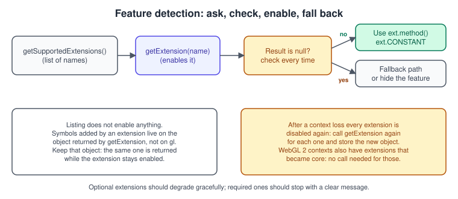
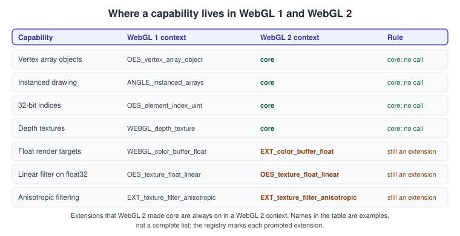
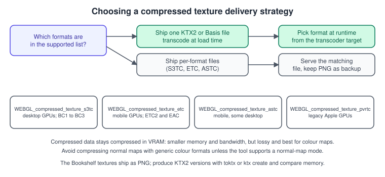

WebGL Extensions
|
This content was generated with the assistance of AI and should be verified against the official documentation before being relied on in production. |
The WebGL specification is deliberately small: it standardises what every browser and GPU combination can do, which is roughly OpenGL ES 2.0 (WebGL 1) or OpenGL ES 3.0 (WebGL 2). Everything else that varies between devices, such as float render targets, anisotropic filtering, texture compression, GPU timers or parallel shader compilation, is offered as an extension. An extension is optional, so any code that uses one must first ask whether it exists and decide what to do when it does not. This page explains the mechanism, the extensions you will meet most often with their fallbacks, and the compressed texture formats, which are the extensions with the biggest effect on the Bookshelf memory budget.
The facts were checked in November 2026 against the Khronos WebGL extension registry and the MDN pages for the individual extensions. The versions documented are WebGL 1.0 and WebGL 2.0 (both editor’s drafts dated 2026-06-30) and three.js r187. Extension availability is a property of the browser, the operating system and the GPU driver at run time; no table on this page replaces asking the context. The code needs only a modern evergreen browser and a page served over HTTP(S) (a local Vite dev server is enough).
In the running example this page sits between the lit rotating book and the instanced shelf: the book-cover texture gains anisotropic filtering, the shelf textures are offered as compressed data, and the later shadow and picking passes check for float render targets before relying on them. The context-related behaviour is continued in Context Loss and Robustness, and the version differences in WebGL Versions and Browser Support. The same ideas for desktop OpenGL are in Versions, Profiles and Extensions.
The mechanism: ask, enable, use

Two methods on the rendering context are involved:
-
getSupportedExtensions()returns an array of strings, one per extension the context offers. It enables nothing. -
getExtension(name)enables the named extension and returns an extension object, ornullwhen the extension is not available.
Unlike desktop OpenGL, where a supported extension is simply there, a WebGL extension is available only after you request it with
getExtension, even when the name appears in the supported list. Any new constants and functions an extension adds are properties of the returned
object, not of the context: you write ext.TEXTURE_MAX_ANISOTROPY_EXT, never gl.TEXTURE_MAX_ANISOTROPY_EXT. Some extensions add nothing to call and
only change behaviour once enabled (for example, they allow a format to be used as a render target); for those, the returned object is just a marker.
Repeated calls with the same name return the same object while the extension stays enabled, so you can call getExtension in several modules
without worry, but it is cleaner to ask once at start-up and keep the results in one caps object.
// capabilities.js - ask once, keep the answers, never touch gl.getExtension elsewhere.
export function queryCapabilities(gl) {
const isWebGL2 = typeof WebGL2RenderingContext !== "undefined" && gl instanceof WebGL2RenderingContext;
const supported = new Set(gl.getSupportedExtensions() ?? []);
const get = (name) => (supported.has(name) ? gl.getExtension(name) : null);
const aniso = get("EXT_texture_filter_anisotropic");
const caps = {
isWebGL2,
supported,
aniso,
maxAnisotropy: aniso ? gl.getParameter(aniso.MAX_TEXTURE_MAX_ANISOTROPY_EXT) : 1,
// Rendering to floating-point textures: an extension in both WebGL versions.
colorBufferFloat: isWebGL2 ? get("EXT_color_buffer_float") : get("WEBGL_color_buffer_float"),
colorBufferHalfFloat: isWebGL2 ? get("EXT_color_buffer_half_float") : get("EXT_color_buffer_half_float"),
floatBlend: get("EXT_float_blend"),
floatLinear: get("OES_texture_float_linear"),
parallelCompile: get("KHR_parallel_shader_compile"),
s3tc: get("WEBGL_compressed_texture_s3tc"),
etc: get("WEBGL_compressed_texture_etc"),
astc: get("WEBGL_compressed_texture_astc"),
loseContext: get("WEBGL_lose_context"),
maxTextureSize: gl.getParameter(gl.MAX_TEXTURE_SIZE),
};
return caps;
}
// Usage:
// const gl = canvas.getContext("webgl2");
// const caps = queryCapabilities(gl);
// if (!caps.colorBufferFloat) console.warn("Float shadow maps unavailable, using RGBA8 packing.");Source: MDN: Using extensions
Naming prefixes
The prefix of an extension name tells you where it comes from.
| Prefix | Meaning |
|---|---|
|
Mirrors an OpenGL ES extension or an extension approved by Khronos. |
|
Mirrors another OpenGL ES or OpenGL extension. |
|
Specific to WebGL, or an OpenGL (ES) extension whose behaviour was significantly changed for the web. |
|
Written by the authors of ANGLE, the translation layer many browsers use under WebGL. |
|
Designed for virtual reality, such as multiview rendering. |
Draft extensions can be exposed under a vendor prefix such as MOZ_ or WEBKIT_, or behind a browser flag, while they are being designed. Do not
ship code that depends on drafts. Older tutorials show a chain that tries the plain name first and then the prefixed names one after another; the prefixed fallbacks are no
longer needed for extensions that have been ratified.
What WebGL 2 made core
WebGL 2 is based on OpenGL ES 3.0, which contains many features that WebGL 1 had to expose as extensions. In a WebGL 2 context those are part of the
API: you call the function directly and getExtension is not needed (and, for the promoted extensions, is not how you reach the feature).

The promotions you will use most often are vertex array objects, instanced drawing, 32-bit element indices, depth textures, multiple draw buffers,
the standard derivatives in shaders and half-float textures. Float render targets, linear filtering of 32-bit float textures, float blending and
anisotropic filtering were not promoted and still need their extension. The registry page of each extension states whether it was promoted, and
the MDN page of the corresponding WebGL 2 method (for example drawArraysInstanced) is the place to look for the core spelling.
// The same feature, two spellings. Wrap it once so the rest of the code does not care.
export function createInstancedApi(gl) {
if (typeof WebGL2RenderingContext !== "undefined" && gl instanceof WebGL2RenderingContext) {
return {
divisor: (loc, d) => gl.vertexAttribDivisor(loc, d),
drawElements: (mode, count, type, offset, n) => gl.drawElementsInstanced(mode, count, type, offset, n),
};
}
const ext = gl.getExtension("ANGLE_instanced_arrays");
if (!ext) throw new Error("Instanced drawing is not available on this device.");
return {
divisor: (loc, d) => ext.vertexAttribDivisorANGLE(loc, d),
drawElements: (mode, count, type, offset, n) => ext.drawElementsInstancedANGLE(mode, count, type, offset, n),
};
}Source: MDN: ANGLE_instanced_arrays
Since this section’s raw WebGL track uses a WebGL 2 context, the wrapper above matters mostly if you must support a WebGL 1 context. The browser support picture is in WebGL Versions and Browser Support; WebGL 2 reaches the large majority of users, so most new code can simply require it.
The extensions you will meet most often
| Extension | What it gives you | Fallback when it is missing |
|---|---|---|
|
Sharper textures on surfaces seen at a grazing angle (the shelf boards seen from the side), by sampling several texels along the stretched axis. |
Keep trilinear filtering with mipmaps; the texture is a little blurrier at an angle. |
|
Lets 32-bit and 16-bit float textures be rendered to. Needed for HDR buffers and for float shadow maps. |
Try |
|
Rendering to 16-bit float textures only; present on systems that support half float but not full float targets. |
RGBA8 render targets with a tone-mapping step. |
|
Blending into 32-bit float render targets. Rendering to float32 does not imply it; blending into float16 is always supported. |
Use half-float targets, or avoid blending into float32 (accumulate in a shader instead). |
|
Linear filtering of 32-bit float textures. |
Sample with |
|
A non-blocking completion query for shader compilation and linking, so a loading screen can animate. |
Compile on first use and accept a stall, or compile during a loading phase. |
|
GPU time of a block of draw calls. Results can be discarded when the timer is disjoint, and the extension is limited for privacy reasons. |
CPU timing with |
|
Many draws of the same program in one call, with per-draw counts and offsets (and optional instance counts). |
A loop of |
|
Renders both eyes of an XR view in one pass by writing to layers of a texture array. |
Two passes, one per eye. |
|
Chooses which vertex of a primitive supplies flat-shaded values. |
Reorder indices so the default vertex is the right one. |
|
Returns the translated shader source the driver compiled, for debugging. |
Read the compile log only. |
|
Unmasked vendor and renderer strings. Some browsers hide or reduce this for privacy. |
Use the masked values from |
|
Simulates losing and restoring a context for testing. |
Test with the browser’s own tools or by reproducing the loss. |
Detailed pages for each extension are in the registry linked in the references. A few of these are worth a closer look.
Anisotropic filtering
A texture seen at a shallow angle covers a long thin footprint on the screen. Trilinear filtering samples a round area and so has to choose between blur (a coarse mip level) and shimmering (a fine one). Anisotropic filtering samples several points along the long axis. The extension exposes a per-texture parameter and a maximum, which you read once.
// Apply the best anisotropy the device allows, clamped to a sensible value.
export function setAnisotropy(gl, caps, texture, wanted = 8) {
gl.bindTexture(gl.TEXTURE_2D, texture);
gl.texParameteri(gl.TEXTURE_2D, gl.TEXTURE_MIN_FILTER, gl.LINEAR_MIPMAP_LINEAR);
gl.texParameteri(gl.TEXTURE_2D, gl.TEXTURE_MAG_FILTER, gl.LINEAR);
if (caps.aniso) {
const value = Math.min(wanted, caps.maxAnisotropy);
gl.texParameterf(gl.TEXTURE_2D, caps.aniso.TEXTURE_MAX_ANISOTROPY_EXT, value);
}
}Anisotropy costs extra texture fetches, so apply it to the textures that suffer from it (shelf boards, floor) rather than to every sprite. See Textures and Samplers for the filtering modes it builds on.
Float render targets
Rendering to a floating-point texture is the foundation of HDR and of precise shadow maps. In WebGL 2, EXT_color_buffer_float enables float32 and
float16 colour attachments. A framebuffer can look complete on one device and be reported incomplete on another, so always check the status after
attaching.
// Create an RGBA16F render target if the device can render to it, else report null.
export function createHdrTarget(gl, caps, width, height) {
if (!caps.isWebGL2 || !(caps.colorBufferFloat || caps.colorBufferHalfFloat)) return null;
const tex = gl.createTexture();
gl.bindTexture(gl.TEXTURE_2D, tex);
gl.texStorage2D(gl.TEXTURE_2D, 1, gl.RGBA16F, width, height);
gl.texParameteri(gl.TEXTURE_2D, gl.TEXTURE_MIN_FILTER, gl.LINEAR); // float16 is filterable in WebGL 2
gl.texParameteri(gl.TEXTURE_2D, gl.TEXTURE_MAG_FILTER, gl.LINEAR);
const fbo = gl.createFramebuffer();
gl.bindFramebuffer(gl.FRAMEBUFFER, fbo);
gl.framebufferTexture2D(gl.FRAMEBUFFER, gl.COLOR_ATTACHMENT0, gl.TEXTURE_2D, tex, 0);
const status = gl.checkFramebufferStatus(gl.FRAMEBUFFER);
gl.bindFramebuffer(gl.FRAMEBUFFER, null);
if (status !== gl.FRAMEBUFFER_COMPLETE) {
gl.deleteFramebuffer(fbo);
gl.deleteTexture(tex);
return null;
}
return { fbo, tex, width, height };
}Source: MDN: EXT_color_buffer_float
The framebuffer machinery itself is in Framebuffers and Render to Texture.
Parallel shader compilation
Compiling and linking a program is often slow, and in a naive program the first getProgramParameter(program, gl.LINK_STATUS) or the first draw
blocks until it finishes. With KHR_parallel_shader_compile the driver may compile on other threads, and you poll COMPLETION_STATUS_KHR without
blocking. Issue every compileShader and linkProgram first, then poll, and only read the link status once the program is complete.
// Start compiling many programs, then wait for them without blocking the page.
export async function linkAll(gl, caps, programs) {
// programs: array of WebGLProgram that were already linked with gl.linkProgram().
if (caps.parallelCompile) {
const done = () => programs.every((p) => gl.getProgramParameter(p, caps.parallelCompile.COMPLETION_STATUS_KHR));
while (!done()) {
await new Promise((resolve) => requestAnimationFrame(resolve)); // keep the loading screen animating
}
}
for (const p of programs) {
if (!gl.getProgramParameter(p, gl.LINK_STATUS)) {
throw new Error(gl.getProgramInfoLog(p) ?? "link failed");
}
}
}Source: MDN: KHR_parallel_shader_compile
MDN’s best-practices page recommends enabling this extension. Without it the loop above is skipped and the first status read blocks, which is the behaviour of a WebGL 1 tutorial. The costs and the loading-screen pattern are in Performance and Debugging.
Timer queries, multi draw and multiview
EXT_disjoint_timer_query_webgl2 measures GPU time with query objects whose results arrive some frames later; treat a result as invalid when the
disjoint flag is set, and expect the extension to be unavailable or coarsened on some browsers because precise timers are a privacy concern (see
Security, CORS and Privacy). WEBGL_multi_draw replaces a loop of draw calls with one call that
takes arrays of counts and offsets, which is useful for many small meshes sharing a buffer. OVR_multiview2 renders the left and right eye in one
pass in XR sessions. All three are optional accelerations: write the plain path first and add them behind a check.
Compressed texture formats
A compressed texture stays compressed in video memory. It uses a fraction of the memory of an RGBA8 texture, which also reduces the bandwidth the sampler needs, and loads faster to the GPU. The price is that the compression is lossy and block-based, and it is generally acceptable for colour maps but not for data such as normals or coordinates unless the format and tool are chosen for that purpose.
Support is fragmented by hardware, so there is no single format that works everywhere:
| Extension | Typical hardware | Notes |
|---|---|---|
|
Desktop GPUs |
Block formats known as DXT1, DXT3 and DXT5 (BC1 to BC3). Widely supported on desktop, rarely on phones. |
|
Mobile GPUs |
ETC2 and EAC formats, part of OpenGL ES 3.0 hardware. |
|
Mobile and some desktop GPUs |
Higher quality or higher compression than the others, with selectable block sizes. |
|
Older Apple GPUs |
Legacy; do not target for new work. |
|
Older Android GPUs |
Legacy WebGL 1 format; ETC2 supersedes it. |
MDN notes that a WebGL 2 application can reach nearly every device by combining the desktop and the mobile formats, and that Basis Universal offers a way to support all common formats with one compressed file, converted at load time by a JavaScript library. The container normally used for this is KTX2 (a file format), carrying a Basis Universal payload that a transcoder (a small WebAssembly module) converts to whichever GPU format the device supports.

The Bookshelf textures ship as PNG in this site’s attachments (the bookshelf.glb model embeds them). To follow the KTX2
route, convert them yourself with a tool such as toktx or ktx create from the Khronos KTX tools, then load them with the helper that your
library provides. For raw WebGL the direct upload of a ready-made block-compressed image looks like this:
// Upload pre-compressed mip levels. `levels` is an array of { width, height, data: Uint8Array } from largest to smallest.
// Compressed textures cannot be mipmapped by generateMipmap, so every level must be supplied.
export function uploadCompressed(gl, internalFormat, levels) {
const tex = gl.createTexture();
gl.bindTexture(gl.TEXTURE_2D, tex);
levels.forEach((lvl, i) => {
gl.compressedTexImage2D(gl.TEXTURE_2D, i, internalFormat, lvl.width, lvl.height, 0, lvl.data);
});
gl.texParameteri(gl.TEXTURE_2D, gl.TEXTURE_MIN_FILTER, levels.length > 1 ? gl.LINEAR_MIPMAP_LINEAR : gl.LINEAR);
gl.texParameteri(gl.TEXTURE_2D, gl.TEXTURE_MAG_FILTER, gl.LINEAR);
return tex;
}
// Pick the format constant from whichever extension exists.
export function pickDxt5(caps) {
return caps.s3tc ? caps.s3tc.COMPRESSED_RGBA_S3TC_DXT5_EXT : null;
}Source: MDN: Compressed texture formats
Block formats have size rules: the dimensions of the base level generally need to be multiples of the block size (4 for S3TC), the extension page
lists the constraints for each format, and violating them produces INVALID_OPERATION. In three.js you rarely write this code; KTX2Loader detects the
renderer’s support and transcodes (see three.js Textures and Colour Management).
Extensions in three.js
WebGLRenderer enables the extensions it needs itself and exposes the result through renderer.extensions, an object with has(name) and
get(name) methods, and through renderer.capabilities (for example the maximum anisotropy). Use these instead of calling getExtension on the
underlying context, which would duplicate what three.js already holds.
import * as THREE from "three";
const renderer = new THREE.WebGLRenderer({ antialias: true });
document.body.appendChild(renderer.domElement);
const hasFloatTargets = renderer.extensions.has("EXT_color_buffer_float");
const maxAniso = renderer.capabilities.getMaxAnisotropy();
console.log({ hasFloatTargets, maxAniso });
const coverTexture = new THREE.TextureLoader().load("bookshelf-cover.png");
coverTexture.anisotropy = Math.min(8, maxAniso); // three.js applies the extension parameter for youSource: three.js docs: WebGLRenderer
Extensions and context loss
When a context is lost, every extension is disabled again except WEBGL_lose_context, and the extension objects you stored become unusable. After
the context is restored you must call getExtension again for each one and replace the stored objects. A caps object built as above makes this a
single call to queryCapabilities. The full recovery procedure is in
Context Loss and Robustness.
Common mistakes and pitfalls
-
Using the extension without calling
getExtension. The name being in the supported list is not enough; the call enables it. -
Reading constants from
gl. The constants and functions an extension adds are on the returned object. -
Not checking for
null.getExtensionreturnsnullfor an unavailable extension, and the error then appears far from the cause. -
Assuming a float framebuffer is complete. Check
checkFramebufferStatusafter attaching a float texture; the extension makes it possible, not guaranteed on every combination of formats. -
Assuming float32 blending. Blending into a float32 target needs
EXT_float_blend; float16 blending is always available. -
Branching on GPU names. The renderer string may be masked, and capability checks are more reliable than model lists.
-
Calling
getExtensionfor a promoted feature in WebGL 2. Use the core function. -
Using drafts. Draft extensions can change or disappear; keep them behind flags in experiments only.
-
Hard-coding one compressed format. A desktop-only S3TC build shows nothing on a phone; deliver KTX2 or several formats.
Performance notes
-
Query extensions once at start-up.
getExtensionandgetSupportedExtensionsare cheap but they are still calls into the driver, and caching the results makes the code clearer. -
Compressed textures reduce memory and bandwidth; on a mobile GPU with a tight budget they are often the single largest win in loading time and frame rate.
-
Parallel shader compilation shortens the first-load stall of scenes with many materials; see the loading-screen pattern above.
-
WEBGL_multi_drawand instancing cut CPU overhead for many objects, as discussed in WebGL 2 Advanced Features.
Where the older guides are outdated
| Older guidance | Today | Why it matters |
|---|---|---|
|
|
The prefixed fallbacks add dead code. |
The books target WebGL 1, where instancing, vertex array objects and depth textures need extensions |
Core in WebGL 2; the extension spellings are needed only for a WebGL 1 context. |
Code gets shorter and the extension paths can be dropped. |
Texture chapters built around ordinary image files (Parisi ch. 3 and 6; Dirksen ch. 10; Cookbook ch. 4) |
S3TC, ETC2, ASTC and, most usefully, KTX2 with Basis Universal are available for textures. |
Memory and download size are a main reason to compress on mobile. |
The extensions covered by the books are those of 2012 to 2015 |
Parallel shader compile, multi draw, multiview and the WebGL 2 timer query are documented on MDN. |
They address stalls and CPU overhead that WebGL 1 era code lived with. |
No book covers WebGL 2; the WebGL 2 statements on this page derive from the Khronos specification and MDN. The books are Tony Parisi, WebGL: Up and Running (O’Reilly, 2012), and Jos Dirksen, Learning Three.js, 2nd edition and Three.js Cookbook (Packt, 2015).
References
-
WebGL extension registry: https://registry.khronos.org/webgl/extensions/
-
WebGL 1.0 specification: https://registry.khronos.org/webgl/specs/latest/1.0/
-
WebGL 2.0 specification: https://registry.khronos.org/webgl/specs/latest/2.0/
-
MDN, Using extensions: https://developer.mozilla.org/en-US/docs/Web/API/WebGL_API/Using_Extensions
-
MDN, WebGL best practices: https://developer.mozilla.org/en-US/docs/Web/API/WebGL_API/WebGL_best_practices
-
MDN, Compressed texture formats: https://developer.mozilla.org/en-US/docs/Web/API/WebGL_API/Compressed_texture_formats
-
MDN, EXT_texture_filter_anisotropic: https://developer.mozilla.org/en-US/docs/Web/API/EXT_texture_filter_anisotropic
-
MDN, EXT_color_buffer_float: https://developer.mozilla.org/en-US/docs/Web/API/EXT_color_buffer_float
-
MDN, KHR_parallel_shader_compile: https://developer.mozilla.org/en-US/docs/Web/API/KHR_parallel_shader_compile
-
MDN, ANGLE_instanced_arrays: https://developer.mozilla.org/en-US/docs/Web/API/ANGLE_instanced_arrays
-
three.js documentation, WebGLRenderer: https://threejs.org/docs/#api/en/renderers/WebGLRenderer
-
O’Reilly, WebGL: Up and Running: https://www.oreilly.com/library/view/webgl-up-and/9781449326487/
-
Packt, Learning Three.js, 2nd edition: https://www.packtpub.com/en-us/product/learning-threejs-the-javascript-3d-library-for-webgl-second-edition-9781784392215
-
Packt, Three.js Cookbook: https://www.packtpub.com/product/threejs-cookbook/9781783981182